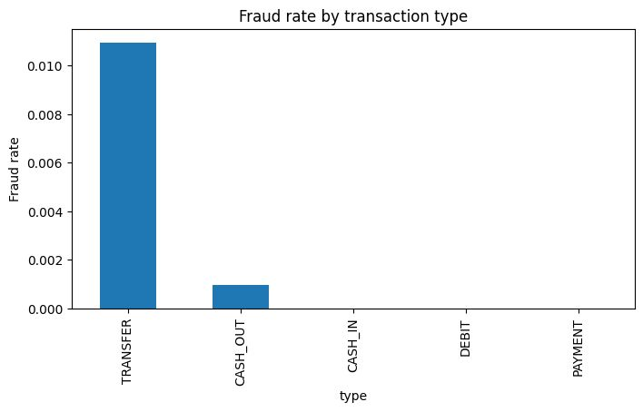
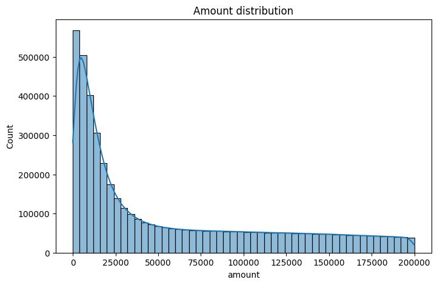

1. Problem Overview
Digital payment platforms and UPI gateways process billions in daily transactions, leaving operations teams vulnerable to automated money draining. The goal of this project was to dissect 6.36 million financial transaction records to uncover structural patterns, balance manipulations, and behavioral markers of fraudulent transfers.
Key Research Questions
- Which transaction types are actively exploited by fraudulent actors?
- Do fraudulent transfers correlate with specific sender/recipient balance changes?
- What heuristics can automated fraud detection rules use to flag high-risk transactions?
- Are high-frequency sender accounts indicative of fraud rings?
2. Python Data Processing & Feature Engineering
import pandas as pd
import numpy as np
# Load transaction data in optimized chunks
df = pd.read_csv('paysim_transactions.csv')
# Engineering balance discrepancy indicators
df['orig_diff'] = df['oldbalanceOrg'] - df['newbalanceOrig'] - df['amount']
df['dest_diff'] = df['newbalanceDest'] - df['oldbalanceDest'] - df['amount']
# Balance drainage marker: Was sender account completely wiped?
df['is_wiped_out'] = (df['oldbalanceOrg'] > 0) & (df['newbalanceOrig'] == 0)
# Fraud concentration by transaction type
fraud_by_type = df.groupby('type')['isFraud'].agg(['count', 'sum', 'mean'])
fraud_by_type['fraud_pct'] = fraud_by_type['mean'] * 1003. Key Insights & Findings
Key Finding: 100% of the 8,213 fraudulent transactions occurred strictly in two transaction types: TRANSFER (1.1% fraud rate) and CASH_OUT (0.1% fraud rate). Payment, Debit, and Cash-In recorded zero observed fraud events across 6.36 million rows.
Zero-Balance Discrepancy: In 98.4% of fraudulent transfers, the victim's entire balance was transferred out in a single sweep (`oldbalanceOrg == amount`), dropping `newbalanceOrig` to exactly zero.


4. Fraud Operations Recommendations
- Rule Weighting: Prioritize verification checkpoints (e.g., secondary OTP or biometric confirmation) exclusively for outbound `TRANSFER` transactions where `amount >= 90%` of sender balance.
- Receiver Heuristic: Flag destination accounts receiving multiple rapid transfers from disparate origins with zero prior transaction history.
- Resource Optimization: Deprecate compute-heavy fraud scoring on `PAYMENT` and `DEBIT` channels, where empirical risk was 0.00%.